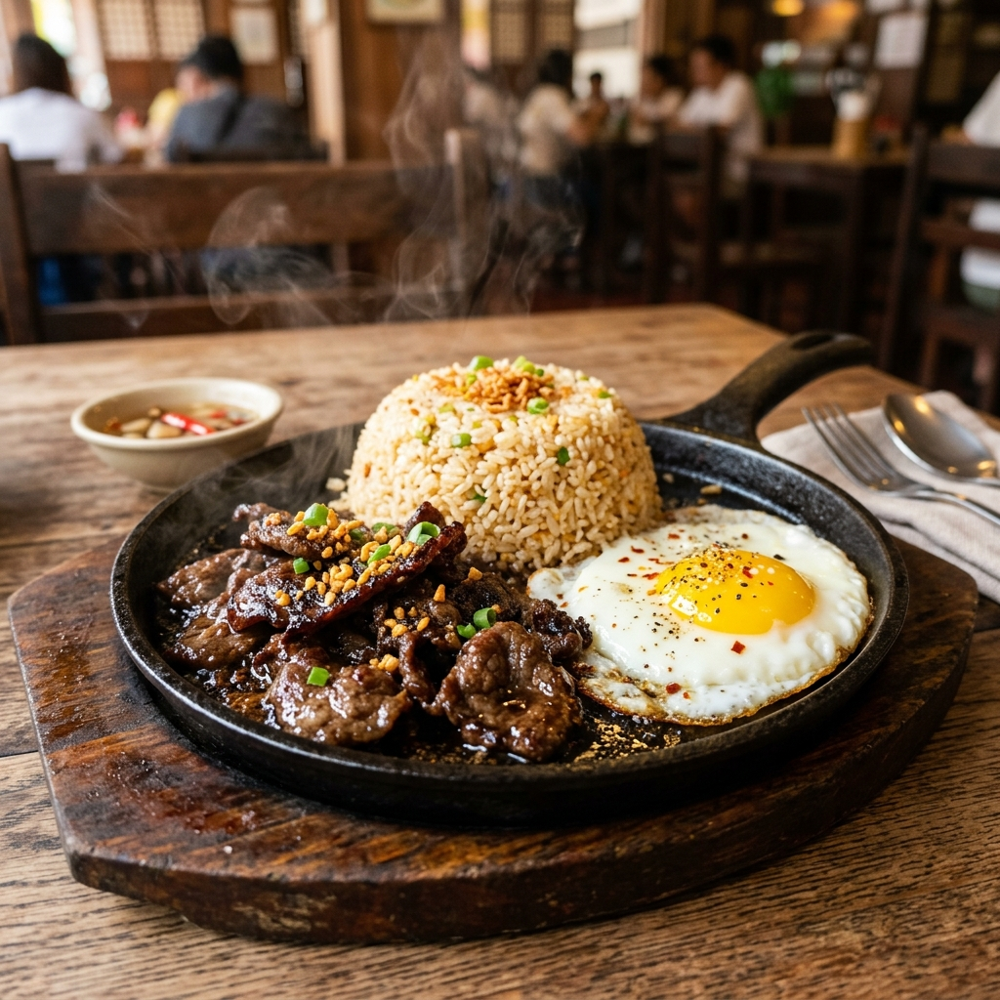
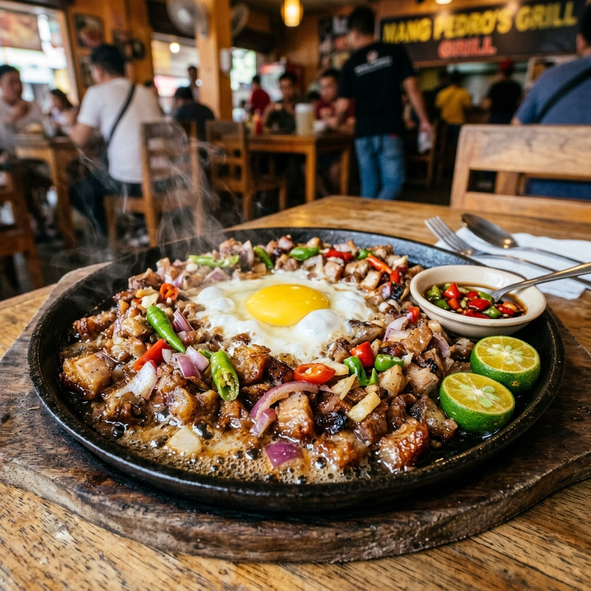

🔥 Filipino Sizzling Comfort Food
Hear the sizzle, taste the comfort. Welcome to your new favorite spot for hot, fresh, and exciting Filipino comfort food!
10+
Sizzling Meals
100%
Hot Plates
Fresh
Made Daily
Why Choose Us
We don't just serve food — we serve a full sensory experience!
Unlike regular eateries, our meals arrive at your table roaring hot on heavy cast-iron sizzling plates, keeping every bite fresh and full of flavor.
The meats get perfectly caramelized edges and the egg finishes cooking right in front of you. It's not just a meal — it's a show!
Classic silog combinations you grew up loving — Tapsilog, Tocilog, Sisig, and more — all given a sizzling upgrade on our hot iron plates.
🏆 Crowd Favorites

Thinly sliced, tender beef tapa marinated in our secret sweet and savory sauce. Served roaring hot so the edges get perfectly caramelized on the cast-iron plate.

Crunchy, savory, and slightly spicy chopped pork face that crackles with every bite. Topped with fresh onions and a raw egg that cooks beautifully as you mix it into the hot plate.
Our Story
Sizzlog House started from late-night study cravings when we realized our favorite takeout silog meals always got cold too fast. We decided to combine the classic tapsilogan menu with heavy cast-iron sizzling plates so that every single bite stays hot, fresh, and full of flavor — from the first scoop of garlic rice to the last.
🎮 Mini Game
A fast-paced cooking game! Take customer orders, grill the meat, fry the egg, plate the sizzling meal, and serve it before they get hangry!
Ready to cook?